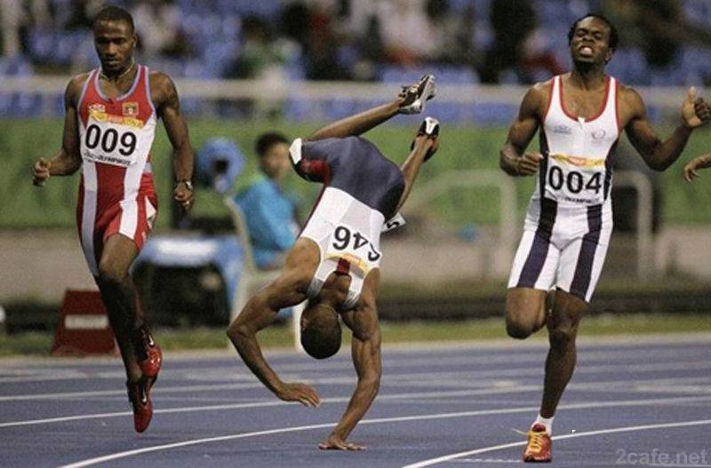
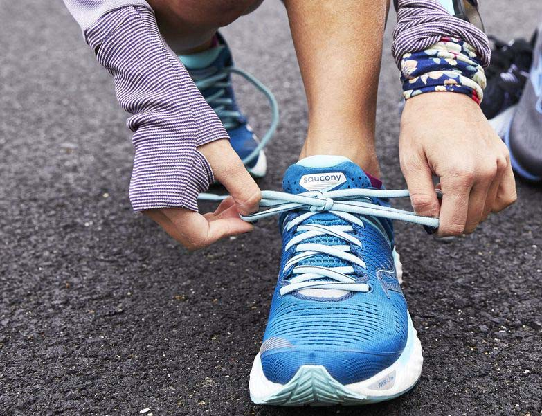
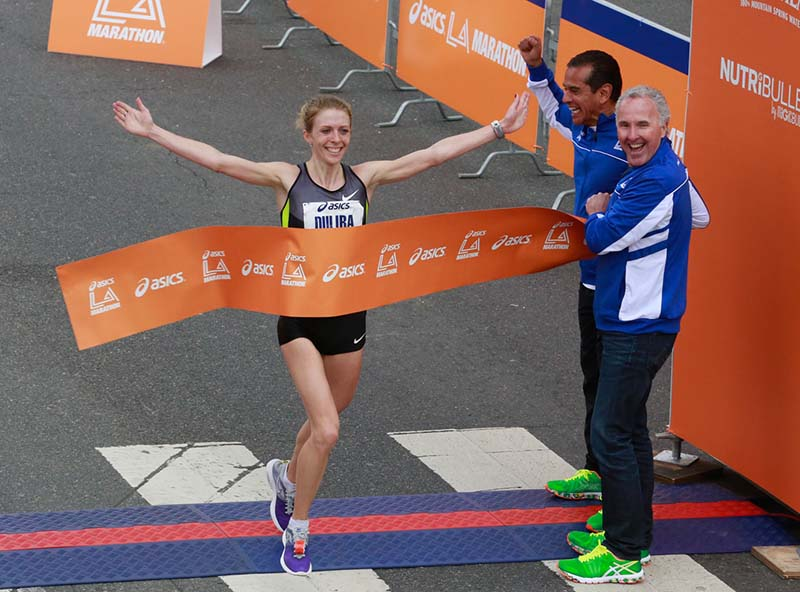

Here's an embarrassing story...
I use to run cross country in high school. During competitions, I was always second-to-last place... which was already embarrassing enough... But one time, I FELL before the finish line and came in LAST place! From then on, I was determine to improve my indurance!
Tighten Your Running Shoes
When I started taking running more seriously, I learned how to tie my shoes better. Back then, I cared more about convinience so I opted for shoes that didn't need to be tied. But when it comes to running, making sure you have shoes that fit is really important!
Pace Yourself
Back then, I would lose all of my energy in the beginning of a long run. I would get too ambitious and exert all of my energy. By the end of the race, I become so exhausted that I become out of breath. Learning to pace myself helped improve my endurance a lot!
Last but not Least... BELIEVE!
Growing up, I never had much confidence in my athletic abilites. I never seemed to run fast enough or hit the ball hard enough. But what I realized is even though I wasn't born incredibly athletic, I can train myself to become stronger every day. It's because I believed in myself, I was able to run 10 miles in a 7mi/hr speed. I have definitely come a long way!